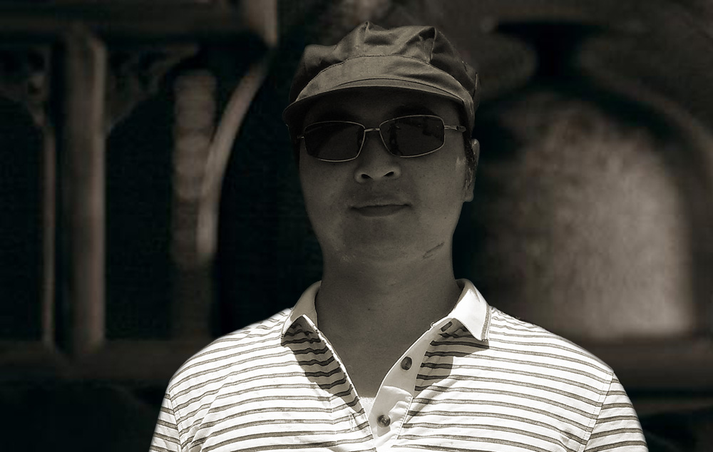
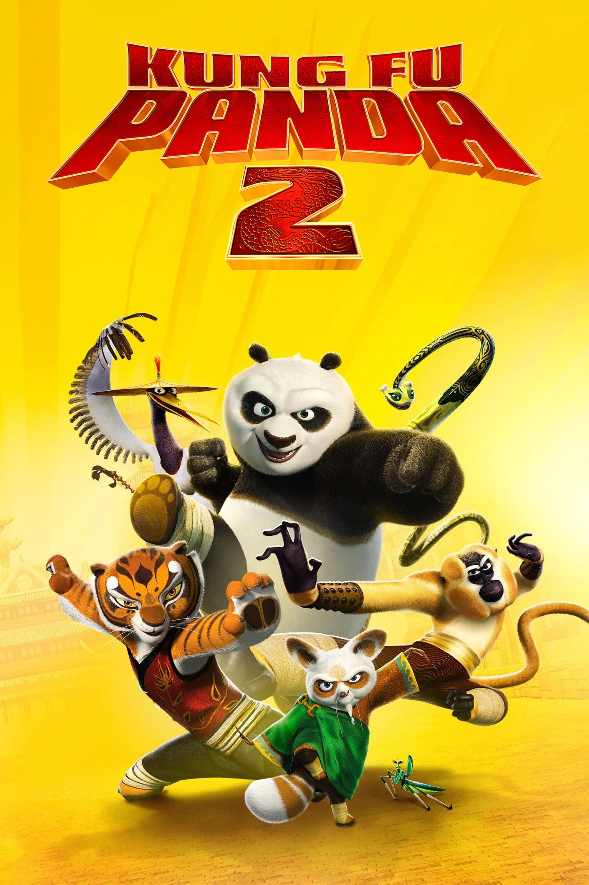
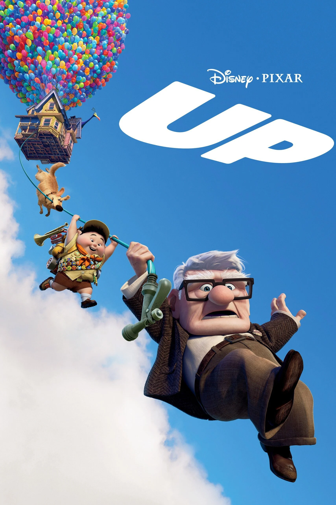
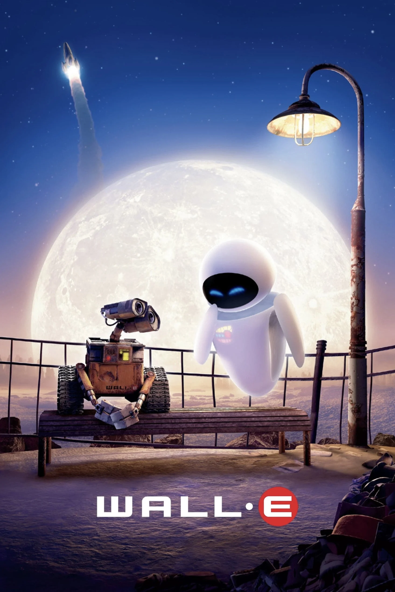
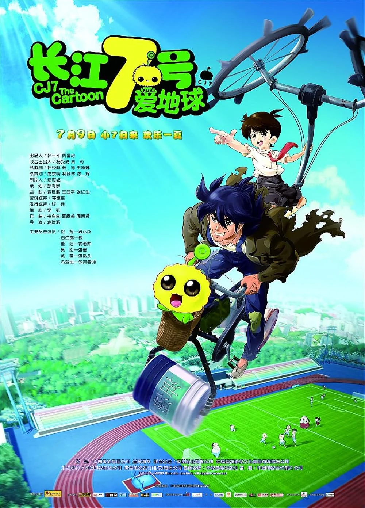
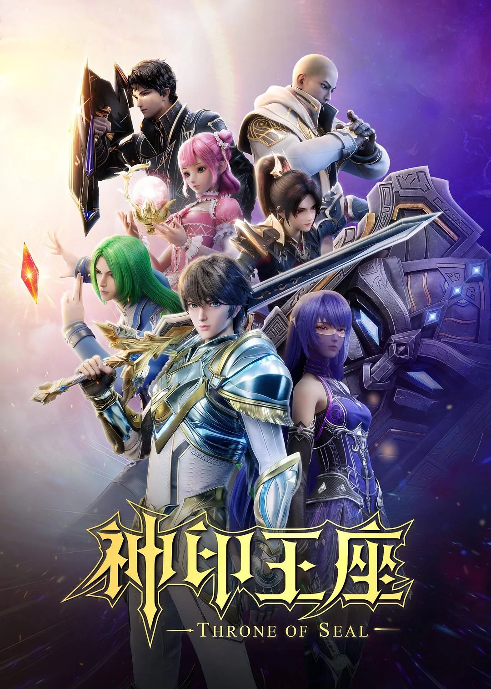
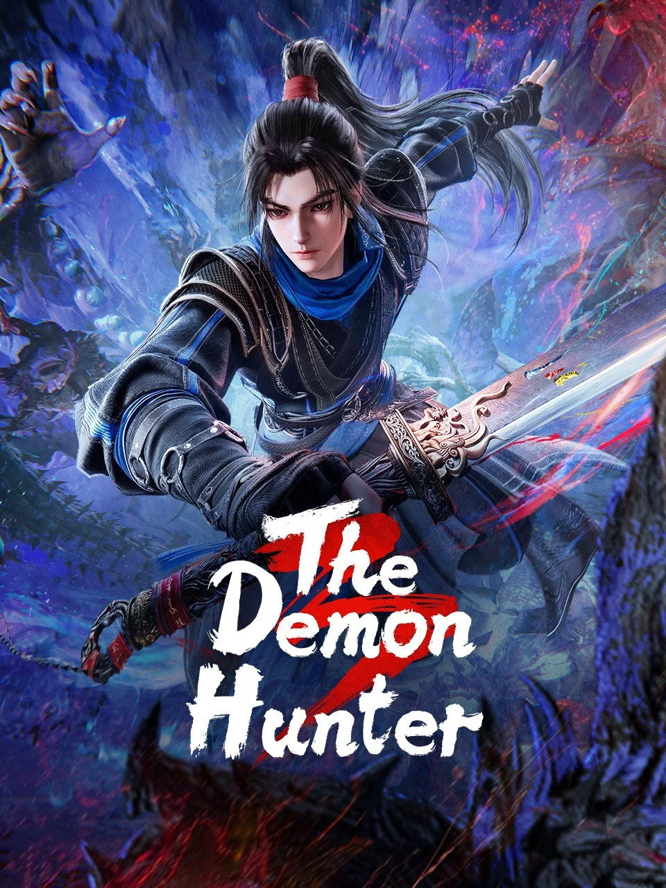
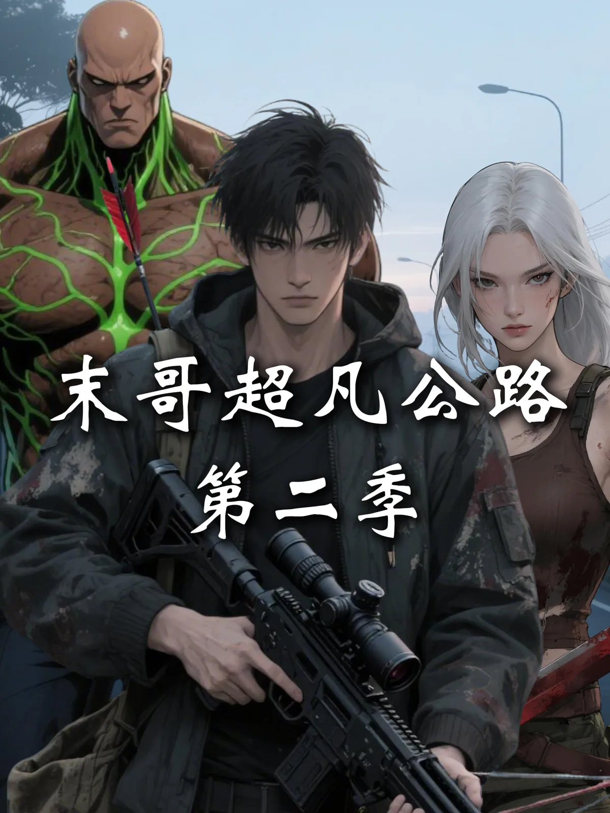

Official-content plays for the Moge's Extraordinary Highway series
CANDY SEA STORY LAB / CHINA
Boundless
Explore
A leading Chinese studio for AI comic dramas and live-action short dramas, backed by more than 30 years of content-production experience.
AI NARRATIVE / REAL-TIME ANIMATION / GLOBAL RELEASE
AI COMIC DRAMALIVE-ACTION SHORT DRAMAREAL-TIME ANIMATIONGLOBAL LOCALIZATION
AI COMIC DRAMALIVE-ACTION SHORT DRAMAREAL-TIME ANIMATIONGLOBAL LOCALIZATION
PROVEN AUDIENCE PULL
Stories measured in hundreds of millions of plays.
Combined Douyin plays across four seasons of Sanctified in the Underworld
Combined Douyin plays across three seasons of Escape: Amazon Showdown
WHAT WE MAKE STARTS WITH WHO LEADS IT
30+ years of production judgment behind every new format.
Deng Jiang Wei and Steve Mo bring feature-film, television animation, premium series, and cultural IP experience into Ulink Tech's AI comic-drama and live-action short-drama studio.

DIRECTOR / FOUNDER
Deng Jiang Wei
Animation director and senior production leader across international series, animated features, downstream film production, and cultural IP development.- International seriesTarzan television animation; Lilo & Stitch television animation
- Feature productionDownstream production on Up, Shrek Forever After, Tinker Bell, Kung Fu Panda 2, and WALL-E
- Chinese animationScary Carrot; 104-episode Stories of Hanbagui; Old Master Q: The Detective; Shen Bing Kids; Bionicle I
- RecognitionStories of Hanbagui received a 2004 Best Cartoon Character award



EXECUTIVE PRODUCER / FOUNDER
Steve Mo
Director, art director, planner, supervisor, and producer across animated film, broadcast, premium streaming series, and real-time production.- DirectorHappy Antarctic; Dr. Health's Healthy Life; Nokia and public-service animation; Path of Counterattack
- Art directorCJ7: The Cartoon; Harbo's Magical Adventure; Sea Song for the Korea Expo China Pavilion
- ProducerYoung Beast Tamer; New Snow Child
- Supervisor / plannerI Am a Great God; Throne of Seal; The Demon Hunter




MOST-WATCHED AI COMIC DRAMA
1.2B
Moge's Extraordinary Highway
A post-apocalyptic survival series where an upgrade system turns a refugee convoy into humanity's last moving fortress.
See the full portfolioSTART A PROJECT
Bring us the premise.
We build the world.
For a production brief, include your format, episode count, target platform, market, and delivery window.